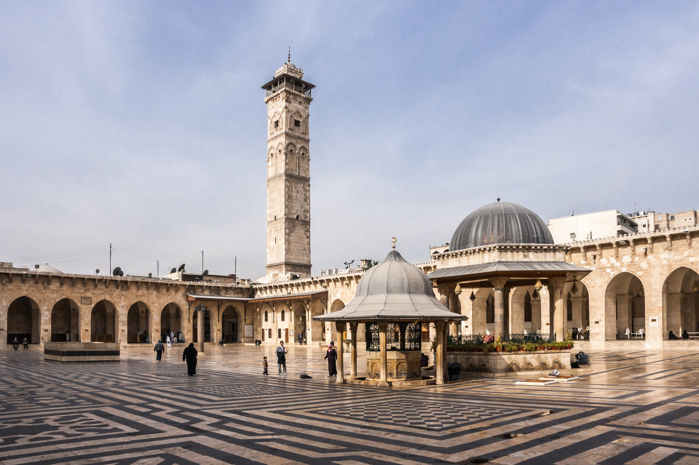
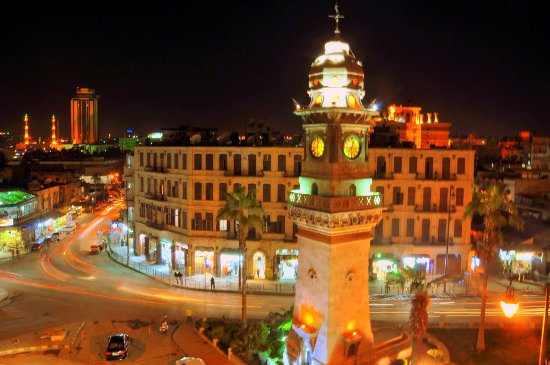
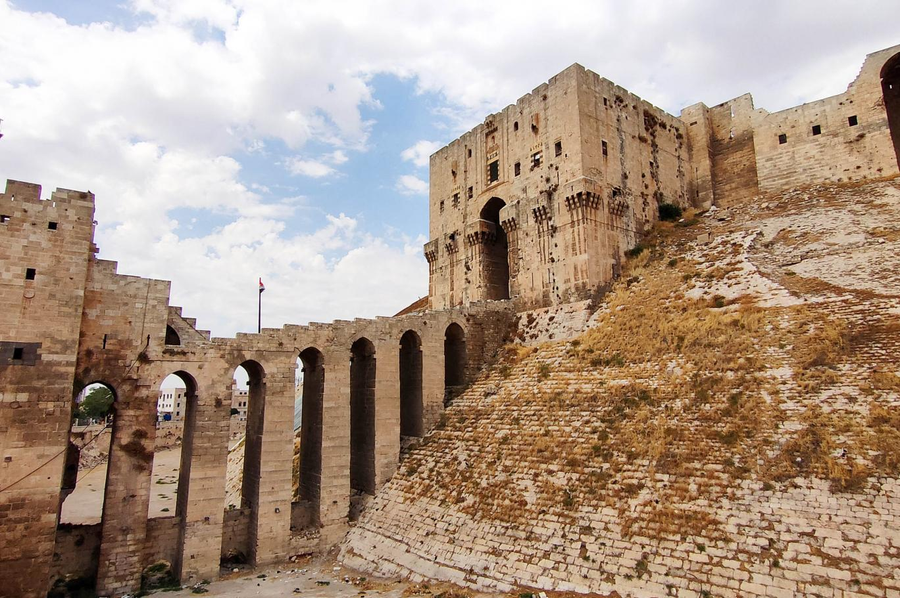
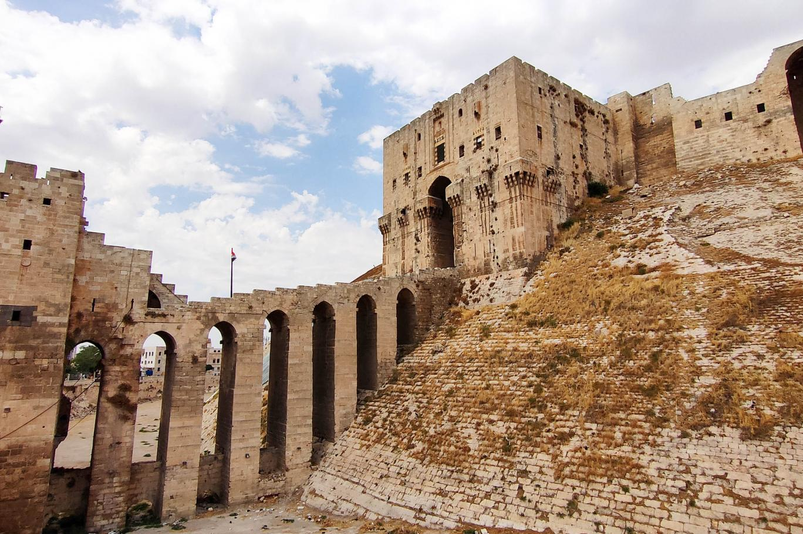

محافظة حلب هي أكثر المحافظات من حيث تعدد السكان تقع شمال سوريا تقسم محافظة حلب إدارياً الى تسع مناطق وتعد حلب أهم مركز صناعي في سوريا إضافة غلى اهميتها التجارية و الزراعية وتعد مدينة حلب من أقدم وأشهر مدن العالم مناطق حلب بحسب التقسيم: منطقة اعزاز منطقة جبل سمعان منطقة الباب منطقة جرابلس منطقة السفيرة منطقة عفرين منطقة عين العرب منطقة منبج منطقة الاتارب
تاريخ حلب: محافظة حلب من الممناطق الغنية جداً بالآثار ومواقع أثرية التي تعود لحاضارات تعد من اقدم الحضارات
مناطق أثرية في حلب: قلعة حلب والتي بناها الاسكندر المقدوني وتعد من أكبر القلاع في العالم
الجامع الأموي الكبير
قلعة دير سمعان
ساعة باب الفرج
  
